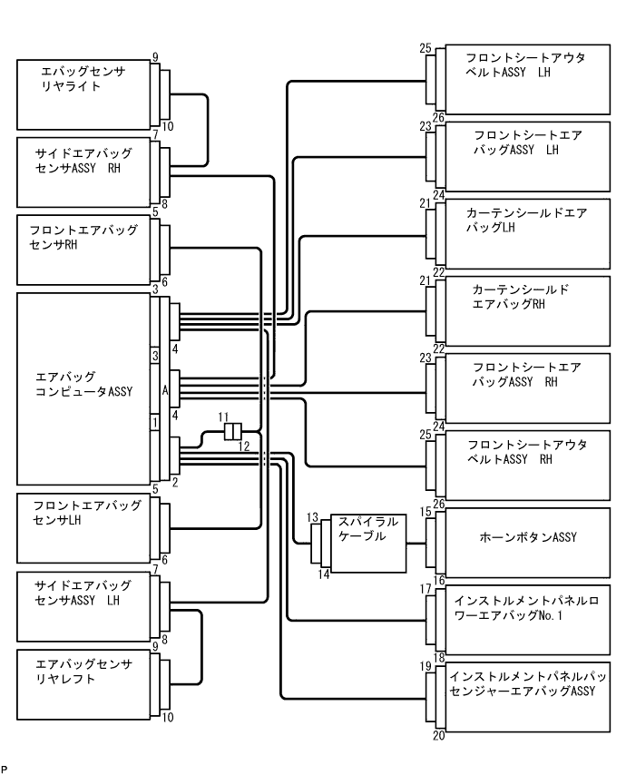
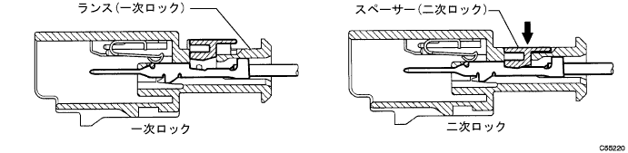
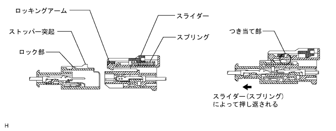
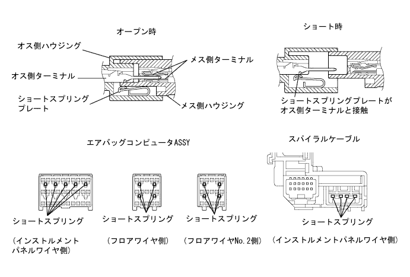
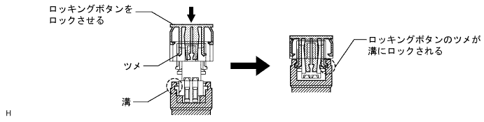
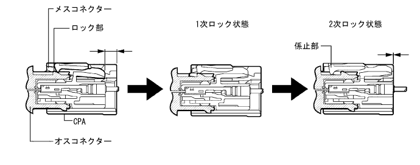
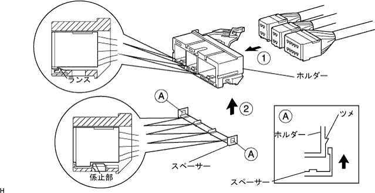
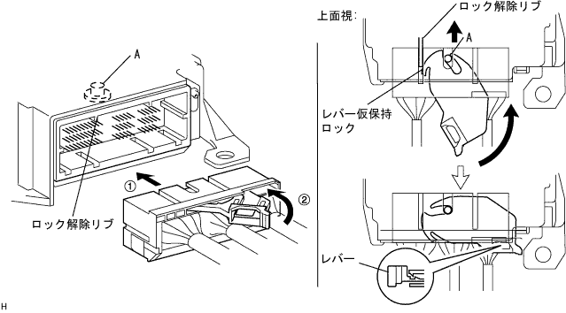
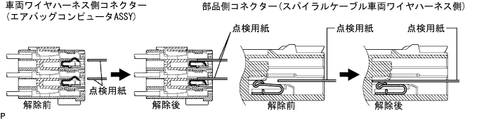

SRS Airbag System Function Description |

| Mechanism Name | Applicable Connector |
|---|---|
| Terminal Double-locking Mechanism | 2、4、6、8、10、11、12、13、19、23 |
| Half-connection Prevention Mechanism | 8、10、12、13、19、23 |
| Connector Double-locking Mechanism | 31 |
| Terminal Short Mechanism | 2、4、14、16、18、20、22、24、26 |
| Connector Lock Mechanism (1) | 15、21、25 |
| Half-connection Detection Mechanism (CPA Connector) | 6 |
| Connector Lock Mechanism (2) | A (Connector Case) |
| Lever Engagement Mechanism | A (Connector Case) |
Terminal Double-locking Mechanism

A mechanism that improves terminal retention force and prevents terminals from coming out.
The connector has a 2-piece construction of housing and spacer, and terminals are retained doubly by the lance (primary lock) and spacer (secondary lock).
Half-connection Prevention Mechanism

A mechanism that prevents half connection of the connector.
If the connector is not fully connected, a spring pushes back the mating connector (male) so that there is definitely no continuity.
Connector Double-locking Mechanism
This mechanism is used on the squib wire harness connectors, and improves connection reliability by double-locking the connectors (male and female) together. It is constructed so that if the primary lock is not engaged, a projection obstructs and the secondary lock cannot be engaged.
Terminal Short Mechanism

A mechanism that automatically shorts the airbag power side terminal and ground side terminal when the connector is disconnected.
A short spring plate provided inside the connector closes the circuit on the airbag side (no potential difference occurs between the two terminals), preventing accidental activation during servicing.
Connector Lock Mechanism (1)

A mechanism that prevents the connector from coming off.
Locking the connector locking button causes the claw of the locking button to engage the side groove of the mating connector, securely connecting the connector.
Half-connection Detection Mechanism (CPA Connector)

A mechanism that detects half connection of the connector.
The CPA and female connector slide simultaneously toward the male connector, and the female connector rides over the lock of the male connector, engaging the 1 lock. From here, only the CPA moves toward the male connector, and the CPA retainer rides over the female connector, engaging the 2 lock. When connection is complete, the rear ends of the CPA and female connector are aligned.
Connector Lock Mechanism (2)

A mechanism that prevents the connector from coming off.
When the connector is fully inserted into the holder, the 1 lock is engaged by the holder lance.
When the spacer is installed to the holder, the retainer enters the position shown in the illustration, engaging the 2 lock and preventing the connector from coming off.
Lever Engagement Mechanism

A mechanism that prevents half connection of the connector.
When the holder is inserted into the airbag computer assembly, the lock release rib releases the lever temporary holding lock, and the lever grips part A of the airbag computer assembly and rotates to pull it in.
Locking the lever to the holder securely locks the holder.

Using paper (0.5mm) of the same thickness as the terminals, release the short mechanism of the connector.